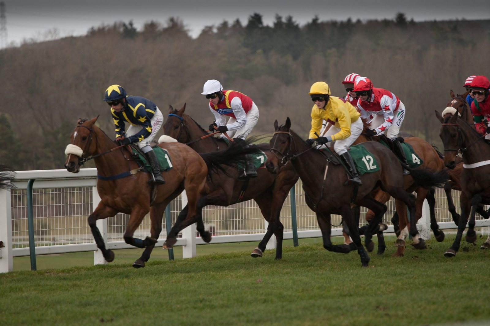

Noel Meade lleva a Affordale Fury a la Betfair Chase de Haydock Park
El entrenador irlandés presenta el miércoles a su campeón de Grado 1 en la Savills Chase, que el sábado 21 de noviembre disputa la carrera de 200.000 libras.

CC BY-SA 2.0
Noel Meade atenderá a los medios este miércoles 18 de noviembre, a las 12.00 horas británicas, en una conferencia telemática convocada por Haydock Park. Será la víspera mediática de la Betfair Chase, carrera de Grado 1 dotada con 200.000 libras que se corre el sábado 21 de noviembre en el hipódromo inglés.
El preparador irlandés tiene previsto acudir a la prueba con Affordale Fury. El caballo, de ocho años, ya ha ganado al máximo nivel: la pasada temporada se impuso en la Savills Chase de Leopardstown, también de Grado 1. En la Betfair Chase buscará un triunfo para el entrenamiento irlandés, que la ganó por última vez con A Plus Tard en 2021.
En la misma sesión intervendrá Dan Cooper, director de pista de Haydock Park, que informará del estado del terreno. James Mackie hablará en nombre de Betfair, patrocinador de la carrera, sobre el mercado de apuestas.
Gordon Brown conducirá la convocatoria. El hipódromo ha pedido que las preguntas se limiten a la Betfair Chase y a la jornada del sábado en Haydock Park. La sesión quedará grabada para los medios que la soliciten.
Por Martín Larrañeta